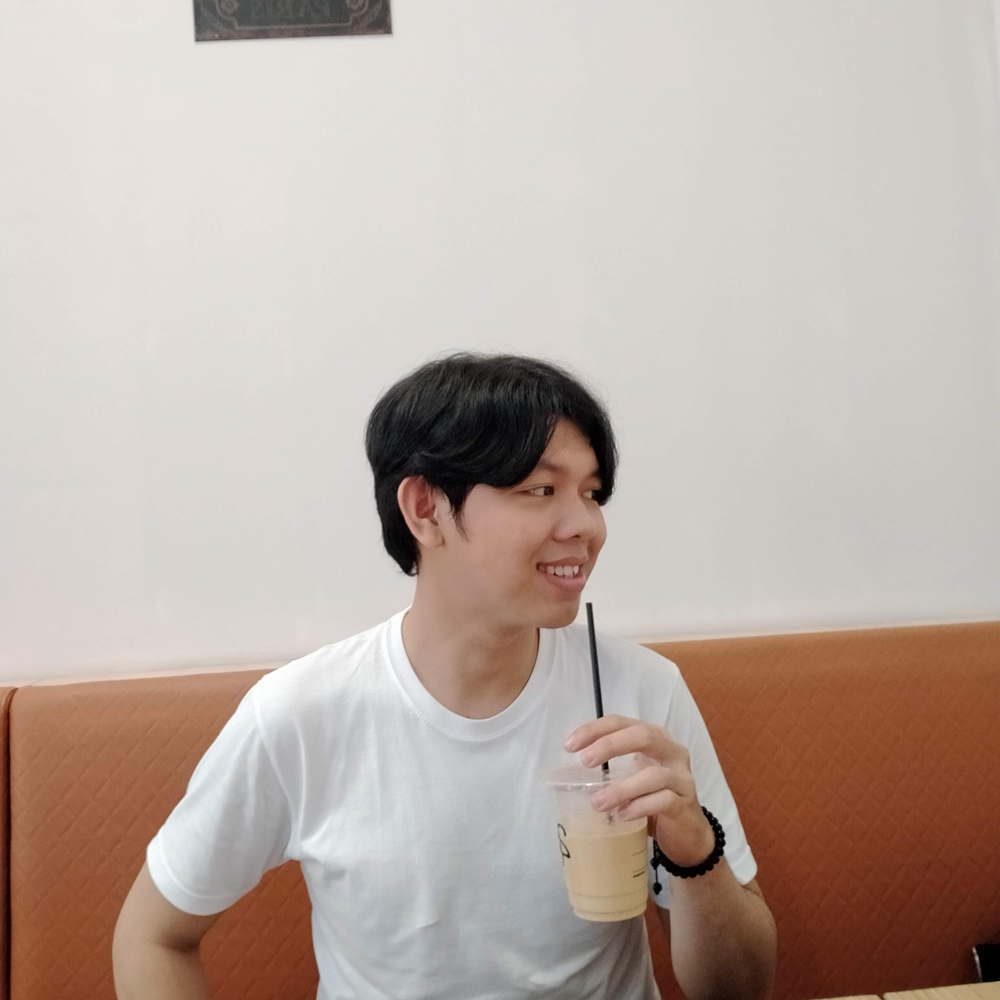

Tentang
Mahasiswa Informatika yang suka membangun hal kecil yang berguna.
Baca selengkapnyaHalo, saya Henokh. Di situs ini saya mendokumentasikan dua hobi saya: Billiard dan Ngopi.
Lihat hobi saya Hubungi saya
Mahasiswa Informatika yang suka membangun hal kecil yang berguna.
Baca selengkapnyaNgoding malam hari dan eksperimen seduh kopi manual.
Baca selengkapnyaPotret meja kerja, cangkir, dan hasil seduhan.
Baca selengkapnya